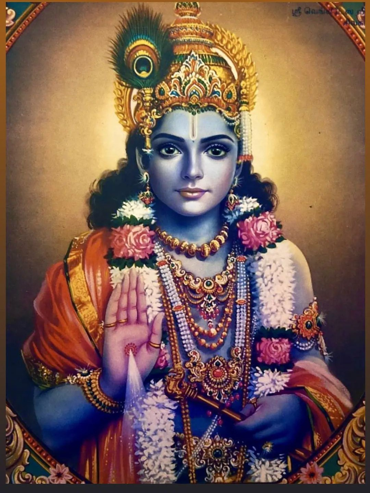

Shri Krishna Janmashtami!
This year on 26th August,2024

Planning:
- Apply vaishnav tilak.
- Wear Vaishnav attire or ethnic.
- Chant atleast 16 rounds of hare krishna mahamantra.
- Prepare delicious prasadam for kanha.
- Read and hear beautiful pastimes of shri Krishna from bhagvatam.
- Visit nearest temple
- Associate with devotees and sing along bhajan,stuti and songs gloryfying Shri Krishna.
Let's visit togehter here
google map link